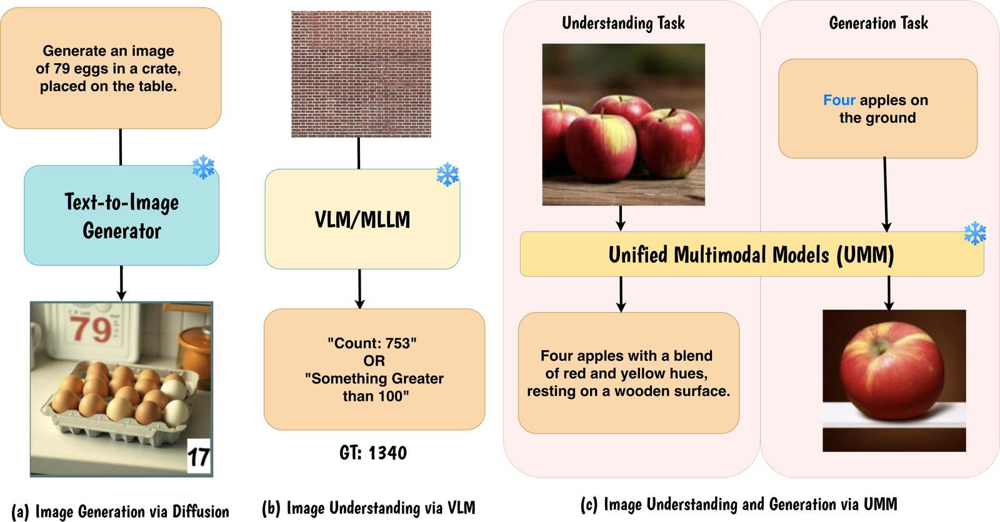
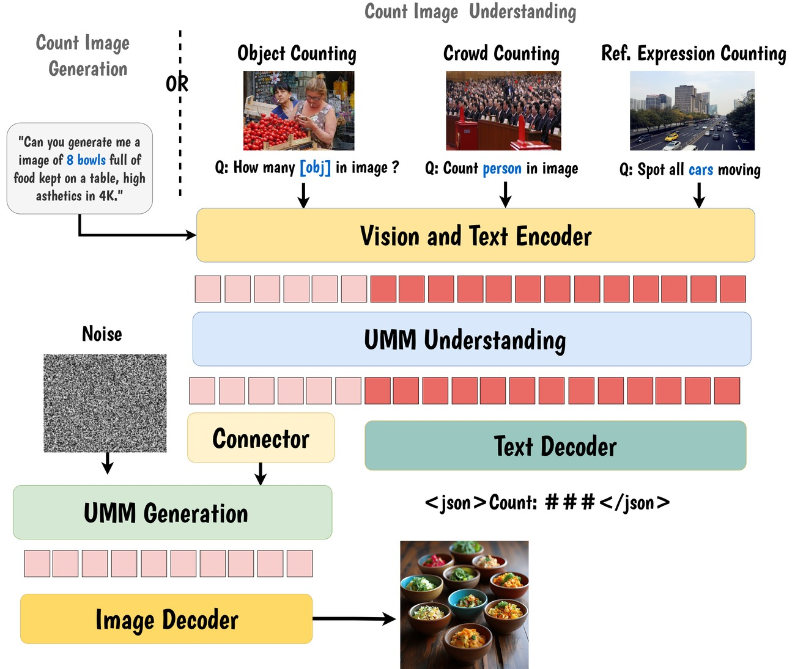
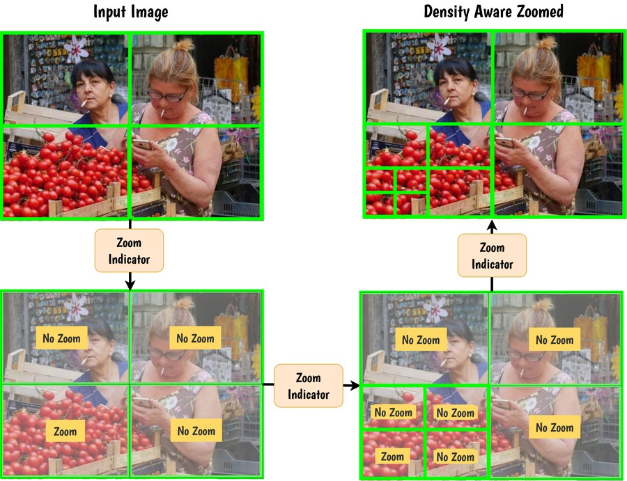
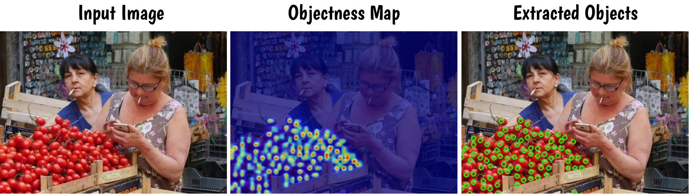
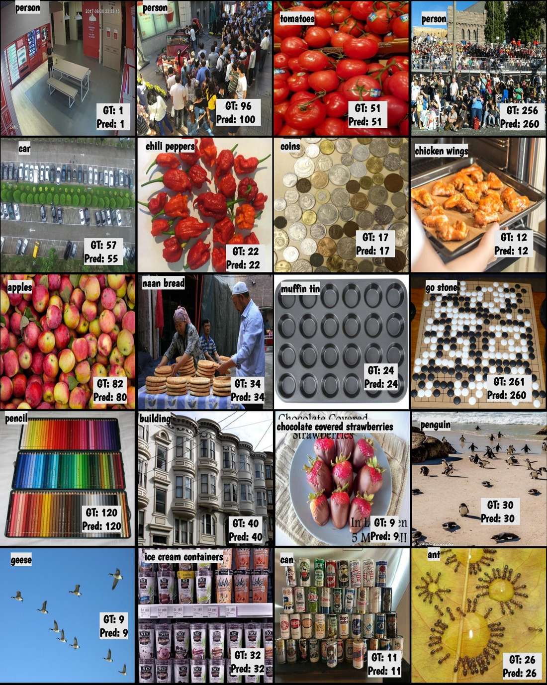
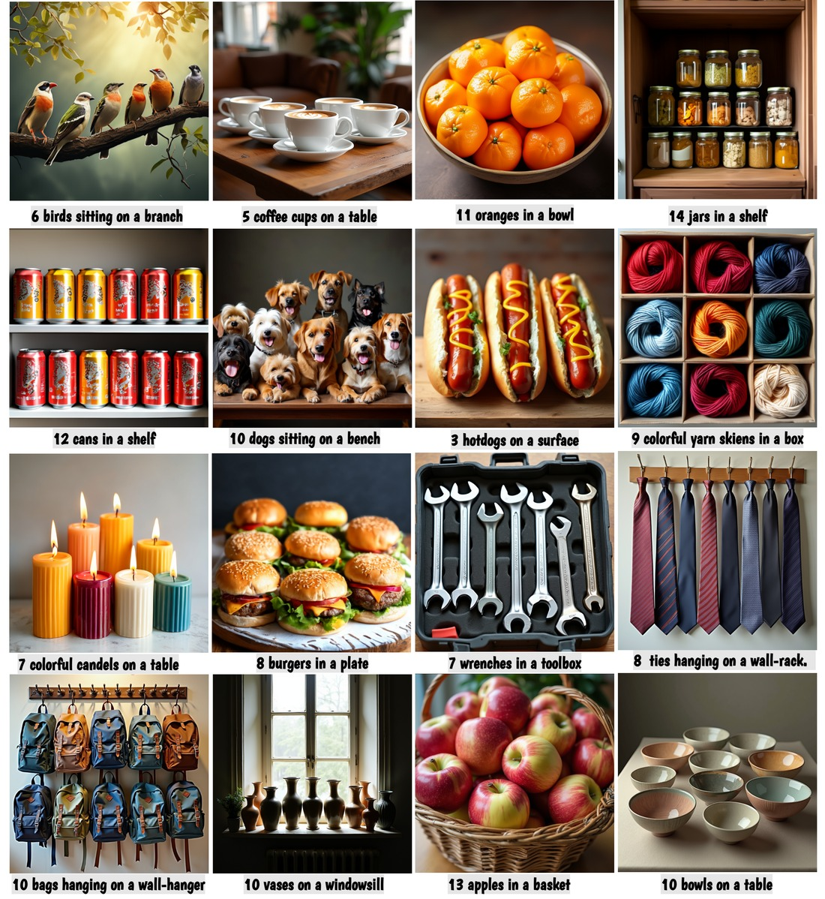

Adapting Unified Foundation Models for Bridging Image Count Understanding and Generation
Fig. 1. ABACUS unifies count understanding (left) — handling sparse, moderate and extremely dense scenes — with count-faithful generation (right), producing images that exactly match a specified count.
ABACUS is a unified VLM built on a 3B-parameter foundation model that simultaneously handles object counting, crowd counting, referring-expression counting, and count-faithful image generation — with no benchmark-specific training.
Three complementary innovations drive the model:
The result: state-of-the-art across 7 benchmarks, outperforming both task-specific specialists and larger generalist models.

Fig. 2. (a) Diffusion models produce wrong cardinalities. (b) VLMs default to coarse estimates on dense scenes. (c) Unified models show a synergy gap: correct counting ≠ correct generation.
Three targeted innovations on top of a frozen foundation model.

Fig. 3. ABACUS pipeline: objectness-guided adaptive zooming feeds into a boundary-aware GRPO counter, which in turn supervises the generation branch through cycle-consistent self-reward.

Density zooming — sub-region selection by objectness.

Objectness maps — instance-aware spatial grounding.
ABACUS outperforms task-specific specialists and larger generalist models on every benchmark — without benchmark-specific training.

Fig. 4. ABACUS predictions (green) vs. ground truth across FSC-147, CARPK, and ShanghaiTech. Handles sparse pencils (GT: 1) to dense go-stones (GT: 261) from text-only prompts. ↗ Full size

Fig. 5. Generated images match the exact requested count while maintaining naturalistic spatial arrangements. No grid patterns, no mode collapse. ↗ Full size
@article{mondal2026abacus,
title = {ABACUS: Adapting Unified Foundation Model for
Bridging Image Count Understanding and Generation},
author = {Mondal, Anindya and Nag, Sauradip and Dutta, Anjan},
journal = {arXiv preprint},
year = {2026}
}